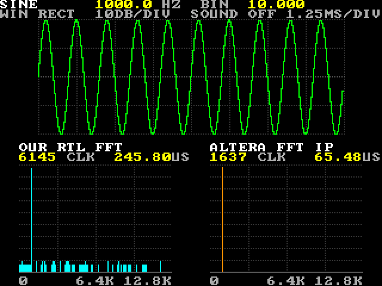

FFT Lab: user guide
From the repo to the lab on your board, and everything you can do with it afterwards. Every command runs from the
repo's root folder in the env virtualenv; the chat does them for you if you ask.
Contents
- What you need
- Build and load it
- Use it
- Control and test over USB
- Keep it after power-off
- Run the simulation
- Change it
- When something looks wrong
What you need
- A DE10-Lite with the LCD / game-pad shield on its Arduino header: the lab draws on the LCD and takes its controls from the game pad and the wheel. The same picture also goes to the VGA connector and the USB letters below set everything, but the project was tested only with the shield.
- Quartus Prime Lite 17.1 installed as in stage 1 of the BKM (
python scripts/doctor.pyshows no FAIL). Altera's FFT II core needs no license file: it runs as OpenCore Plus evaluation IP, with two limits explained below. It runs without a time limit only while the PC stays connected, and it cannot be written to the flash. - The repo cloned,
envcreated (setup-my-computerdoes this), the board on the USB cable. - A PC that stays awake while you use the lab: sleep drops the programmer's connection, which the IP needs, and can cut the board's USB power.
- For the simulation only: Icarus Verilog from the OSS CAD Suite (step 5 of
setup-my-computer). Recording the IP's answers again also needs ModelSim Starter, which comes with Quartus.
Build and load it
The sources are in the repo; one build makes the bitstream (the repo keeps none, they are 3 MB each):
python scripts/de10.py build projects/fft_lab # about 4 minutes; ends with resources and timing
python scripts/de10.py program projects/fft_lab # loads it and stays connected: leave it openBecause the design holds evaluation IP, the build writes output_files/fft_lab_time_limited.sof and nothing else:
no plain .sof, no .pof. program finds it, loads it and keeps the programmer connected
(tethered), so the command does not return. Leave it running while you use the lab and give other commands in a second
window. Ctrl+C ends the connection: our FFT and everything else go on, but the IP stops when its evaluation time is up.
Intel's FFT IP guide gives one hour without the connection; on our board the IP was still running 32 minutes after the
disconnect (we did not wait for the end). Then the screen says IP IS NOT RUNNING: program again.
From the archive instead (for example in the Quartus GUI): Project → Restore Archived Project → fft_lab.qar,
then Processing → Start Compilation, then Tools → Programmer with output_files/fft_lab_time_limited.sof.
Keep the Programmer open and the cable in while you use the lab.

What you should see right after loading, and after every press of KEY0:
- the top line
SINE 1000.0 HZ BIN 10.000: a 1 kHz sine, which is bin 10 (one bin is 100 Hz); - ten cycles of it on the green scope;
- one tall bar at 1 kHz in each spectrum: ours in cyan on the left, with a few low bars of rounding noise, the IP's in orange on the right;
- under each title, the time that FFT took:
6145 CLK 245.80USfor ours,1637 CLK 65.48USfor the IP; - LEDR0 lit,
1000.0on the 7-segment digits, the shield's status LED off.
Use it
The lab makes a wave, shows it on the scope and puts it through both FFTs, about 60 times a second. You choose the wave:
| Control | Does |
|---|---|
| Joystick right, or KEY1 | the next shape: sine → square → triangle → saw → spikes → noise → sine |
| Joystick left | the previous shape |
| Joystick up / down | the frequency one step (12.5 Hz) up / down. Hold it: it repeats after 0.4 s, about 20 steps a second, and after 2 s in steps of 100 Hz. The range is 0 to 12,787.5 Hz. |
| Wheel | sets the frequency directly, once you turn it a little (two steps) away from where it stood. The joystick,
KEY0 or a USB N take the frequency back until the wheel moves again. |
| A | Hann window on / off: it tapers the wave at both ends, so a frequency between two bins makes a narrow peak instead of a wide skirt |
| B | dB scale (10 dB a division, 90 dB tall) or linear |
| Start | hold: the picture stays on one frame and HOLD shows in red; Start again goes on |
| Select | sound on / off: the buzzer plays the frequency, as a square wave |
| KEY0 | back to the start (sine, 1 kHz, no window, dB, no hold, silent), and a restart of the IP |
| Switches | nothing (they only appear in the debug link's event lines) |
What the lab shows:
| Where | Shows |
|---|---|
| Top line | the shape, the frequency in Hz and in bins (in eighths of a bin: 1,050 Hz is BIN 10.500) |
| Second line | the window (WIN RECT or WIN HANN), the scale (10DB/DIV or
LINEAR), the sound, and the scope's time scale, 1.25 ms a division |
| Scope (green) | the 256 samples the FFTs get, after the window: 10 ms at 25.6 kHz |
| Left spectrum (cyan) | our FFT (fft_r2): 128 bars, one per 100 Hz from 0 to 12.8 kHz; under the title,
the clocks it took and the time at 25 MHz |
| Right spectrum (orange) | Altera's FFT II on the same samples, on the same scale, with its own time |
| LEDR0 … LEDR5 | the shape, one LED each (LEDR0 sine … LEDR5 noise) |
| LEDR6, 7, 8, 9 | window on, linear scale, hold, sound on |
| 7-segment | the frequency in Hz, with one decimal |
| Status LED (shield) | lit while the IP is not running |
While HOLD is on, the LEDs follow what you change, but the picture, the text and the digits keep the held frame; your change shows when you let go of hold.
Control and test over USB
The lab listens on the JTAG UART, the same link the BKM uses for logs. A letter picks a setting and digits give its value; letters work in either case, and one string can hold several settings:
| Send | Does |
|---|---|
S0 … S5 | the shape: 0 sine, 1 square, 2 triangle, 3 saw, 4 spikes, 5 noise |
N0 … N1023 | the frequency in steps of 12.5 Hz: N80 = 1,000 Hz,
N1023 = 12,787.5 Hz |
W0 / W1 | no window / Hann |
L0 / L1 | dB / linear |
H0 / H1 | hold off / on |
M0 / M1 | sound off / on |
R | the report line (below) |
D | the defaults and an IP restart, like KEY0 |
? | the debug link's status line: T=… BTN=… KEY=… SW=… WHL=… |
python scripts/de10.py send S2N333W1L1 # a 4,162.5 Hz triangle, Hann window, linear scale
python scripts/de10.py send R # the report line
python scripts/de10.py send "?" # the debug link's status line
python scripts/de10.py log 10 # 10 s of event lines (buttons, keys, switches)
python scripts/de10.py screen x.png # the screen (320 × 240) in about 6 s; pixels also in x.txtThe report line, here at the defaults (one line of 126 characters, shown in two here):
FFTLAB SHAPE=0 N=0080 HZ=01000.0 WIN=0 LIN=0 HOLD=0 OUR_CLK=06145 OUR_PK=010/087
IP_CLK=01637 IP_PK=010/088 IP_EXP=-08 IP_OK=1Everything in it describes the frame on the screen, except HOLD, which is live. _CLK is the clocks
that FFT took, _PK its highest bar (bin / height in pixels), IP_EXP the IP's block exponent. When the
IP is not running, the line ends IP_CLK=00000 IP_PK=000/000 IP_EXP=+00 IP_OK=0.
Check the board against the model
sim/lab_model.py is a bit-exact Python copy of the lab: it tells you what the board must send and show for any
setting, written as a case such as S0N84W1L0:
# what the board must send and show for the case S0N84W1L0
python projects/fft_lab/sim/lab_model.py report S0N84W1L0
python projects/fft_lab/sim/lab_model.py render S0N84W1L0 expect.png
# set the board to that case and read its screen
python scripts/de10.py send H0M0S0N84W1L0
python scripts/de10.py screen shot.png
# compare them; it ends with OK: S0N84W1L0: 0 of 76800 pixels differ
python projects/fft_lab/sim/lab_model.py compare S0N84W1L0 shot.txt diff.pngThe model knows the IP's answers only for the 13 cases recorded in ModelSim; for any other case it compares everything except the IP's panel. The whole check, 17 cases, is one command:
python projects/fft_lab/sim/board_check.py # about 4 minutes; ends with PASS: 17/17 ...It sets each case, compares the report line and every pixel with the model, keeps the captures and differences in
projects/fft_lab/logs/board/, and puts the board back to the defaults at the end. Keep your hands off the board
while it runs: if the settings change during a capture, it tries the case again, up to 4 times.
Keep it after power-off
Not this design as it is. The evaluation IP runs only from a time-limited .sof, so Quartus writes no
.pof, and python scripts/de10.py flash has nothing to write (it stops and says why). After a power-off,
program it again. Two ways to a design that starts by itself:
- a license for the FFT II IP: the build then writes a normal
.sofand.pof, andpython scripts/de10.py flash projects/fft_labworks as for any project; - a version with our FFT only: take the IP out of
src/lab_engine.sv, and its panel out ofsrc/lab_draw.svandsim/lab_model.py. With no evaluation IP left, the build writes a.pofas usual.
Run the simulation
python scripts/sim.py projects/fft_lab/sim/tb_fft_r2.sv # our FFT against the model: PASS
python scripts/sim.py projects/fft_lab/sim/tb_mag.sv # the magnitude and dB stage
python scripts/sim.py projects/fft_lab/sim/tb_wave_gen.sv # the wave generator
python scripts/sim.py projects/fft_lab/sim/tb_fft_r2.sv --gui # the same, then GTKWave
python projects/fft_lab/sim/check_tb.py # the whole lab, about 4 minutes
python -m pytest tests/test_fft_lab.py -q # all of the abovecheck_tb.py runs sim/tb_fft_lab.sv in Icarus and compares every frame and report line with the
model. It writes 12 pictures next to the testbench (sine_1k.ppm, square.ppm,
tri_hann_lin.ppm, saw_hann.ppm, spikes.ppm, sine_84_hann.ppm,
sine_84_rect.ppm, hold.ppm, sound_on.ppm, noise_ip_dead.ppm,
ip_zeros.ppm, wheel.ppm), the log sim/tb_fft_lab.log, and a
sim/work/<name>_diff.png for any picture that differs. It ends with
OK: … frames, … pictures and … report lines equal the model; --no-run checks the last run again
without simulating.
Icarus cannot simulate Altera's FFT II, so the testbench plays back the IP's answers, recorded once in ModelSim
(sim/ip_vectors.hex, played by sim/fft256_replay.sv). To record them again after changing the IP or
its cases:
python projects/fft_lab/sim/record_ip.py # ModelSim Starter; the first run takes a few minutesChange it
| You want | Where |
|---|---|
| another wave shape | src/wave_gen.sv; the same shape in sim/lab_model.py
(shape_value, Gen, SHAPES); its name in shape_s in
src/lab_draw.sv |
| other colours | the colour constants in src/lab_draw.sv, and the same ones in
sim/lab_model.py (the model must draw what the board draws) |
| another dB range or linear scale | mag_rom() in sim/lab_model.py, then
python projects/fft_lab/sim/lab_model.py make writes assets/mag_rom.bin again |
| another feel for the controls | src/lab_ctrl.sv: the joystick's repeat timing,
WHEEL_DIV (how often the wheel is read) and SETTLE (how long it is ignored after power-up) |
| more patience with the IP | WATCHDOG (20,000 clocks) and IP_RESET_CLOCKS (1,000) in
src/fft_lab_core.sv |
| other IP settings | ip/generate_fft_ip.py, then sim/record_ip.py to record its answers
again |
| more board test cases | OTHERS in sim/board_check.py; to check the IP's panel too, add
the case to CASES in sim/record_ip.py and record |
After any change: check_tb.py (OK), the build (timing OK), program, board_check.py
(PASS). The model draws every frame, so most mistakes show up as a picture before the board is involved.
When something looks wrong
| You see | Likely | Do |
|---|---|---|
| White bars at the left and right of the LCD | normal: the panel is 800 wide, the picture 640 | nothing |
| Nothing on the screen, LEDs dark | the board is not programmed, or the PLL did not lock | python scripts/de10.py jtag to see the board, then program again |
| IP IS NOT RUNNING in red, the orange panel empty, the shield's status LED lit | the IP's evaluation time is up: the programmer was disconnected (Ctrl+C, a closed window, a sleeping PC) | program again and leave it connected; our FFT works on meanwhile |
| Low cyan bars that the orange panel does not have | normal: our FFT halves its numbers at every stage and rounds more; the IP uses block floating point | nothing: that difference is part of what the lab shows |
| The frequency jumps somewhere else | the wheel took over: it does as soon as it moves two steps | the joystick, KEY0 or N… take it back; leave the wheel alone |
| The spectra flicker | normal with noise: new noise every frame | Start (hold) keeps one frame |
| The picture does not change | hold is on (HOLD in red) | Start, or send H0 |
| No sound | sound is off, or the buzzer is on another shield line | Select, or send M1; check ARDUINO_IO[12] in src/fft_lab_top.sv against your shield |
board_check.py tries cases again, or fails | the settings changed during a capture: a button, the wheel | run it again with hands off the board |
de10.py flash stops: no .pof | the evaluation IP: no .pof is made | see Keep it after power-off |
| Build fails | a changed source | run the simulation first: Icarus points at the line; then logs/build.log |
| Timing not met after a change | a long path, most likely in the drawing | python scripts/de10.py report projects/fft_lab; register the new signal once per frame or per pixel |